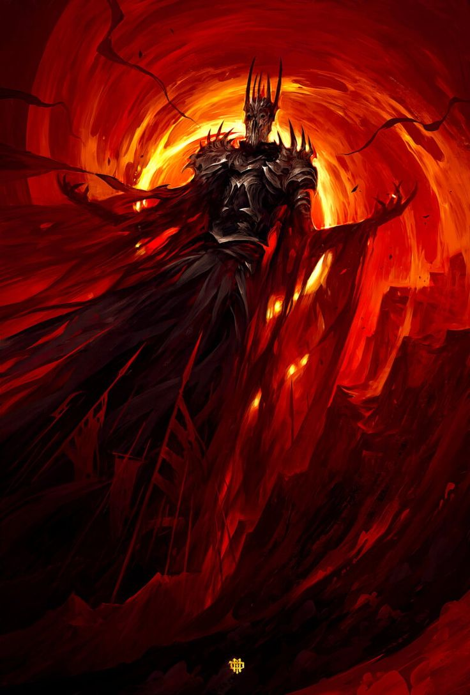

Sauron
Sauron – to jeden z najpotężniejszych antagonistów w literaturze fantasy, stworzony przez J.R.R. Tolkiena w legendarium Śródziemia. Jest centralną postacią zła w trylogii Władca Pierścieni, a także w Silmarillionie, gdzie przedstawiono jego pochodzenie i wcześniejsze losy. Sauron był pierwotnie jednym z Majarów – potężnych duchów służących Valarom, bogom Śródziemia. W początkach swego istnienia nazywał się Mairon, co oznacza „podziwiany” lub „wspaniały”, i słynął z wielkiego talentu do rzemiosła oraz miłości do porządku i harmonii. Został jednak uwiedziony przez Morgotha (Melkora), pierwszego Władcę Ciemności, i stał się jego najwierniejszym sługą. Po upadku Morgotha Sauron przyjął rolę jego następcy i stopniowo umacniał swoją potęgę, aż stał się jednym z najgroźniejszych wrogów wolnych ludów Śródziemia. Jego największym osiągnięciem było wykucie Jedynego Pierścienia, który miał mu zapewnić kontrolę nad innymi Pierścieniami Władzy i ich nosicielami. Pierścień stał się symbolem jego mocy i zła, a także kluczem do panowania nad całym światem. Sauron był mistrzem manipulacji, oszustwa i korupcji. W II Erze przyjął zwodniczą formę Annatara, „Władcy Darów”, by zjednać sobie elfów i pomóc im w tworzeniu Pierścieni Władzy. Jednak jego prawdziwa natura była przerażająca: Sauron jako ciemna, niecielesna istota objawiał się w formie oka bez powiek, płonącego ogniem nienawiści. Jego symbolami były także Czarne Wieże i złowrogie istoty, takie jak orkowie, trolle czy Nazgûle – Upiorni Jeźdźcy.